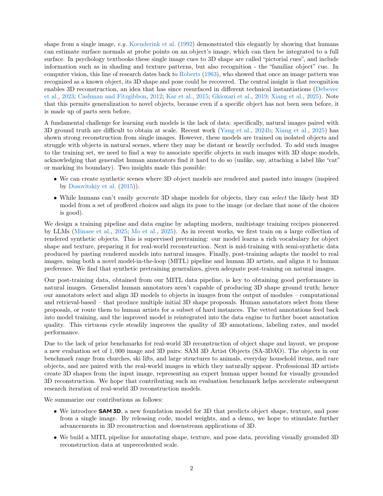
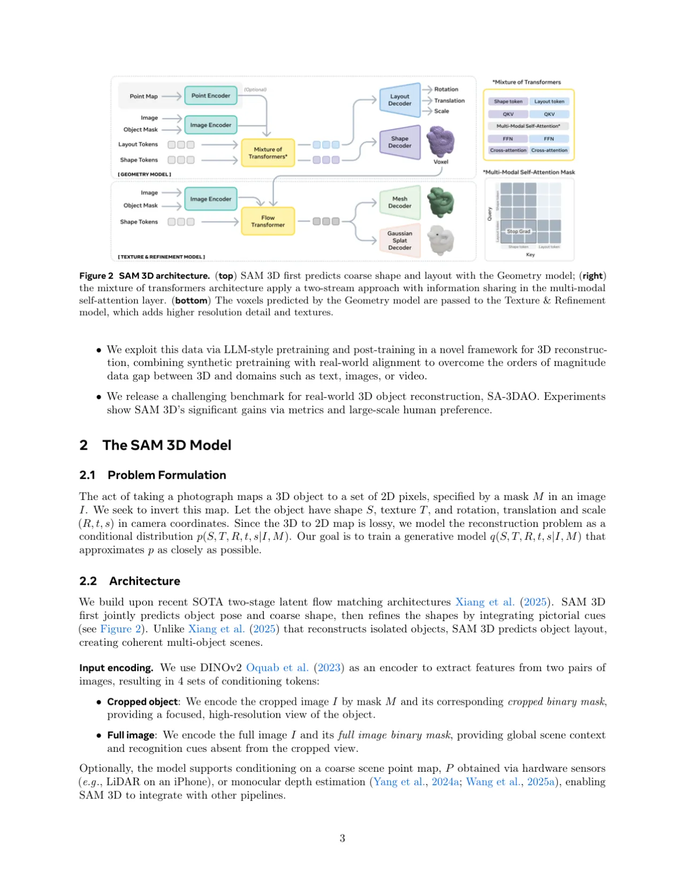
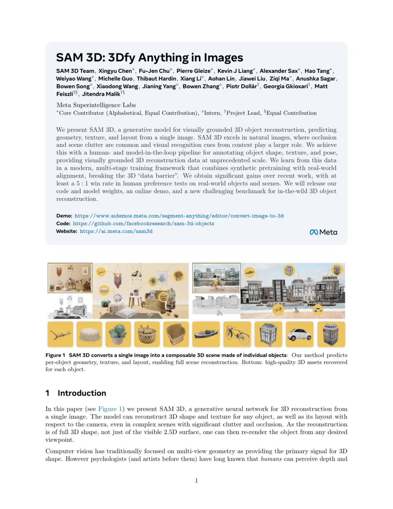
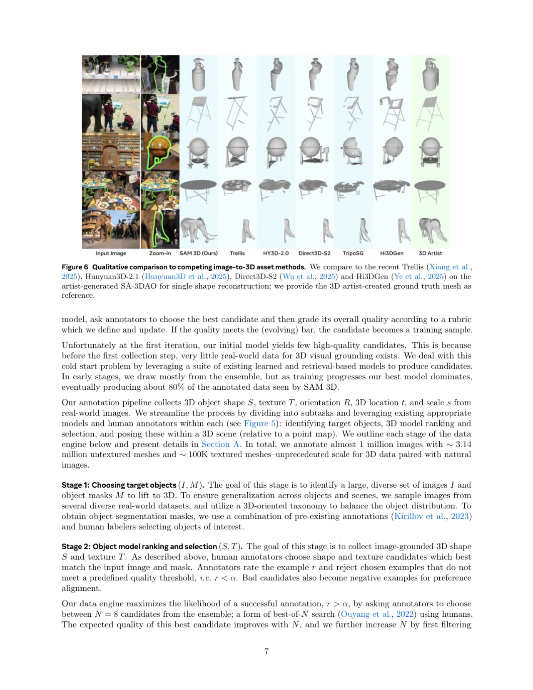
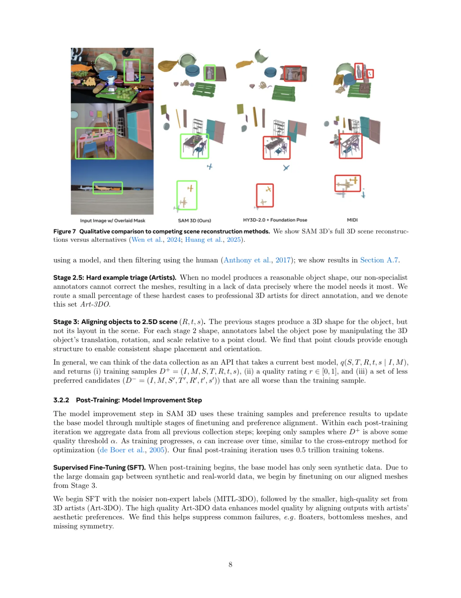
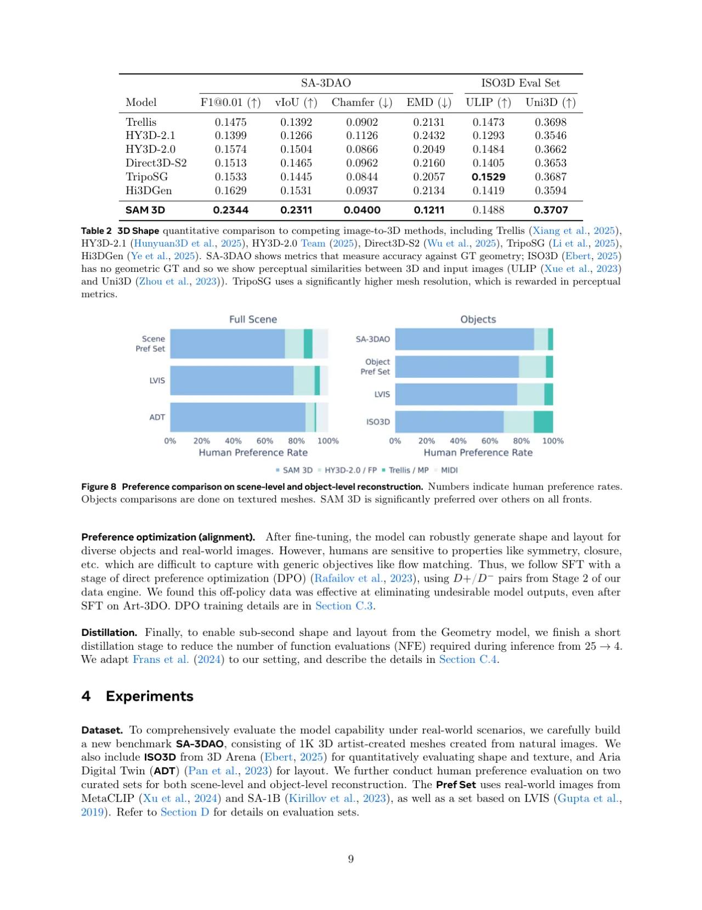

SAM 3D 是一个生成式神经网络，仅从单张自然图像即可预测任意物体的 3D 形状（geometry）、纹理（texture）及在相机坐标系下的位姿（layout）。通过结合人工与模型协作的数据引擎以及 LLM 式多阶段训练流程，SAM 3D 在真实世界遮挡场景中实现了显著突破，人工偏好测试胜率不低于 5:1。
计算机视觉长期依赖多视角几何来恢复 3D 结构，而人类凭借阴影、纹理乃至"熟悉物体"等图像线索便可从单张图片感知深度与形状。现有单视角重建方法（如 Trellis、HunyuanD3-2.1）在隔离合成对象上表现尚可，但在自然场景中面临严重遮挡与杂乱背景时却力不从心——根本原因在于大规模真实图像配对 3D 数据的匮乏。
"A fundamental challenge for learning such models is the lack of data: specifically, natural images paired with 3D ground truth are difficult to obtain at scale."

SAM 3D 采用双阶段生成架构：Geometry 模型预测粗粒度形状与布局，Texture & Refinement 模型在此基础上补充几何细节与纹理。整体训练遵循"合成预训练 → 半合成中训练 → 真实世界后训练"的 LLM 式多阶段流程，通过人工与模型协作的数据引擎（MITL）突破 3D 数据瓶颈。

使用 DINOv2 对 裁剪目标图（高分辨率局部细节）与完整场景图（全局上下文与识别线索）分别编码，各自搭配对应二值 mask，产生 4 组 conditioning tokens。可选地接入点云图（LiDAR 或单目深度估计），实现与外部流水线的无缝对接。
数据引擎将标注任务分解为三个子任务：Stage 1 识别目标对象并获取 mask；Stage 2 由标注员从 N=8 个候选 3D mesh 中选出最优者并评分（低质量样本路由至 3D 艺术家）；Stage 3 标注员在点云参考下手动调整物体的平移、旋转与缩放。随着训练迭代，模型自身最终贡献约 80% 的标注数据，形成正向飞轮效应。

评测基准包括：SA-3DAO（1K 艺术家 3D mesh，真实世界场景）；ISO3D（来自 3D Arena，无 GT 几何，使用感知相似度指标）；Aria Digital Twin (ADT)（布局评测）；以及大规模人工偏好测试集（Pref Set，来自 MetaCLIP、SA-1B、LVIS）。对比方法包括 Trellis、HunyuanD3-2.1/2.0、Direct3D-S2、TripoSG、Hi3DGen、MIDI。
| 方法 | F1@0.01 ↑ | vIoU ↑ | Chamfer ↓ | EMD ↓ |
|---|---|---|---|---|
| Trellis | 0.1475 | 0.1392 | 0.0902 | 0.2131 |
| HY3D-2.1 | 0.1399 | 0.1266 | 0.1126 | 0.2432 |
| HY3D-2.0 | 0.1574 | 0.1504 | 0.0866 | 0.2049 |
| Direct3D-S2 | 0.1513 | 0.1465 | 0.0962 | 0.2160 |
| TripoSG | 0.1533 | 0.1445 | 0.0844 | 0.2057 |
| Hi3DGen | 0.1629 | 0.1531 | 0.0937 | 0.2134 |
| SAM 3D（本文） | 0.2344 | 0.2311 | 0.0400 | 0.1211 |
| 方法 | SA-3DAO 3D IoU ↑ | SA-3DAO ADD-S@0.1 ↑ | ADT 3D IoU ↑ | ADT ADD-S@0.1 ↑ |
|---|---|---|---|---|
| SAM 3D + FoundationPose（流水线） | 0.2837 | 0.5079 | 0.3661 | 0.6495 |
| MIDI（联合生成） | — | — | 0.0336 | 0.0175 |
| SAM 3D（联合生成） | 0.4254 | 0.7232 | 0.4970 | 0.7673 |


| 训练阶段 | F1@0.01 ↑ | vIoU ↑ | Chamfer ↓ | EMD ↓ |
|---|---|---|---|---|
| 预训练（Iso-3DO） | 0.1349 | 0.1202 | 0.1036 | 0.2396 |
| + 中训练（RP-3DO） | 0.1705 | 0.1683 | 0.0760 | 0.1821 |
| + SFT（MITL-3DO） | 0.2027 | 0.2025 | 0.0578 | 0.1510 |
| + DPO（MITL-3DO） | 0.2156 | 0.2156 | 0.0498 | 0.1367 |
| + SFT（Art-3DO） | 0.2331 | 0.2337 | 0.0445 | 0.1257 |
| 最终模型（+ DPO Art-3DO） | 0.2344 | 0.2311 | 0.0400 | 0.1211 |
消融实验表明，每个训练阶段均带来近单调的 3D 形状改进，充分验证了多阶段训练设计的有效性。数据引擎迭代运行越久，Elo 分数近线性提升（每 3 周一个 checkpoint，Elo 差 400 分对应 10:1 胜率）。

Geometry 模型使用粗形状分辨率 O ∈ ℝ64³，Gaussian splat 解码器最多 32 splats/voxel。对于复杂形状（如人体的手部、面部），整体尺度所能分配的 voxel/splat 数量有限，而人类视觉对此类局部特征极为敏感，因此会出现可感知的形变或细节丢失。论文指出：当单独重建手部或头部时，SAM 3D 表现明显更好。解决方向包括提升输出分辨率、超分辨率模型、基于部件的生成，或切换到隐式 3D 表示。
SAM 3D 一次预测一个对象，未经训练以推理多物体间的物理交互，如接触关系、物理稳定性、穿透检测或共面对齐（同一地平面）。多物体联合预测并加入相应约束损失将是下一步工作。
纹理预测在不知晓预测对象姿态的情况下进行。对于具有旋转对称性的物体，模型偶尔会预测出实际上将物体旋转到错误朝向的纹理。